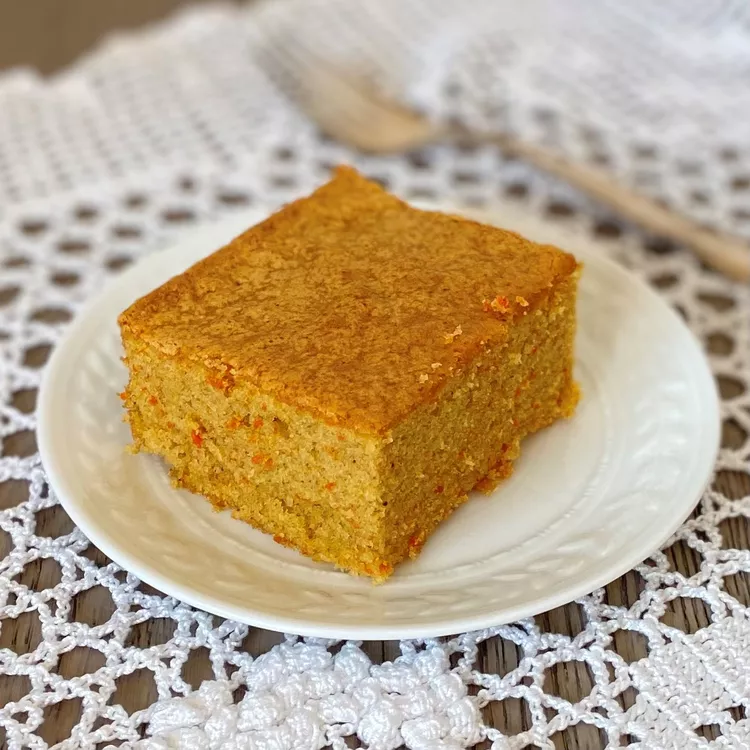

CARROT CAKE RECIPE

Description
When enjoying a delicious carrot cake, have you ever wondered about the origin of carrot cake?
This cake, so loved in Brazil, has a rich and curious history.
After all, even today it is unusual to think of carrots as the main ingredient in a cake.
But, who could have imagined that this combination would result in one of the most sought after cakes in the country?
Ingredients
- 3 large carrots, peeled and thinly sliced
- 4 eggs
- 1 cup cooking oil
- 2 cups white sugar
- 2 cups all-purpose flour
- 1 tablespoon baking powder
- 2 tablespoons butter or margarine
- 1 cup white sugar
- 1 cup instant hot chocolate mix
- ¾ cup milk
steps
-
Preheat oven to 350 degrees F (175 degrees C). Lightly grease 9x13 baking dish.
-
Place the carrots, eggs, and oil in a blender or bowl of a food processor. Process until carrots are finely chopped.
Pour the carrot mixture into a mixing bowl. Stir in 2 cups sugar until well blended.
Stir in the flour and baking powder; mix until well blended. Pour the batter into the prepared baking dish.
-
Bake in preheated oven until top springs back when lightly touched, about 40 minutes.
-
Meanwhile, make the icing by placing the butter, 1 cup sugar, instant hot chocolate drink mix, and milk in a pan.
While stirring, heat to almost boiling over medium-high heat until mixture thickens.
When the cake is done, remove from the oven and immediately spread the icing evenly over the top.